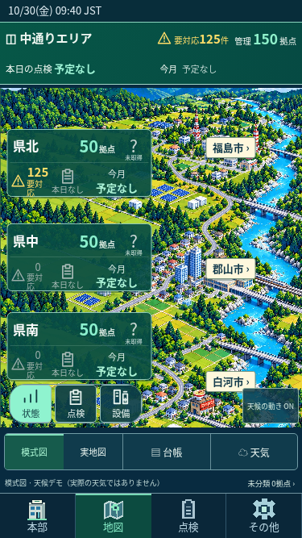
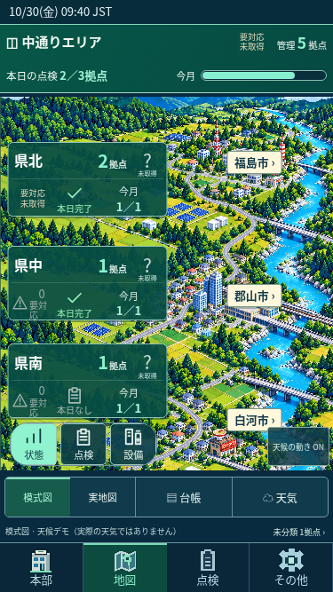

SOLVIA 地図画面の仕上げ
検証用の独立デモです。実務データへの登録は行っていません。天候は演出デモで、実際の天気ではありません。
確認した操作
- 全体／地域の要対応：同じ不具合IDを重複せず一覧表示。未分類も全体に含む。
- 本日／今月の点検：拠点単位で集計。期間内の全予定を完了した拠点だけ完了に数える。
- 県北：本日未完了（青）。県中：本日すべて完了（緑）。県南：本日の予定なし（灰）。
- 点検を保存・完了しても未解決の不具合は黄色のまま。選んだ現場・予定IDを点検画面へ引き継ぐ。
- 150拠点・125件の指摘、集計未確認と天気未取得、BGMの「その他」からの操作を確認。
150拠点・125件

台帳未確認・天気未取得

背景は模式図です。実際の位置・経路は登録座標に基づく実地図で確認します。
SOLVIAへ戻る